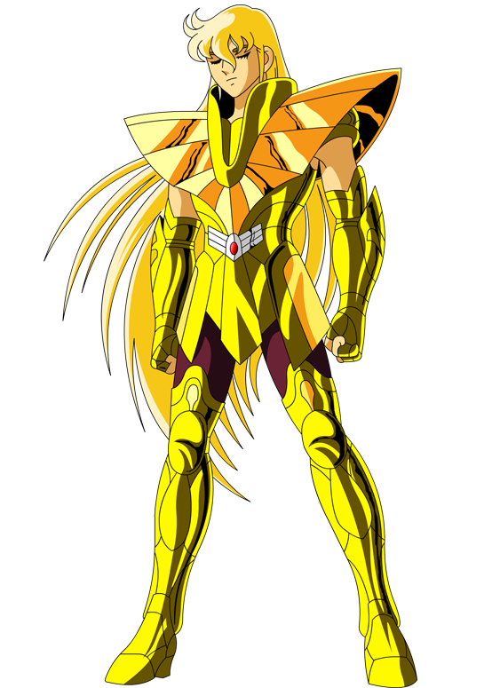
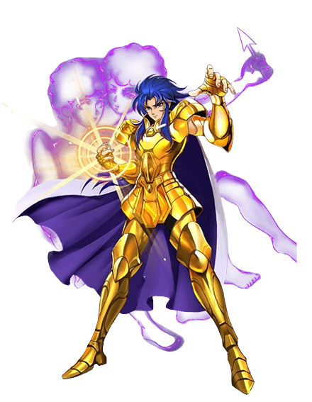
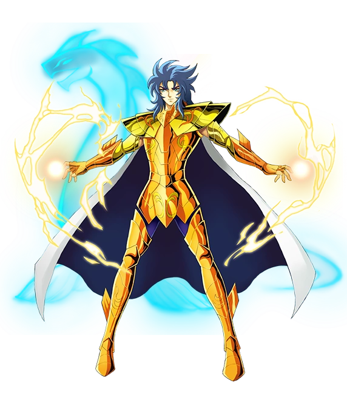
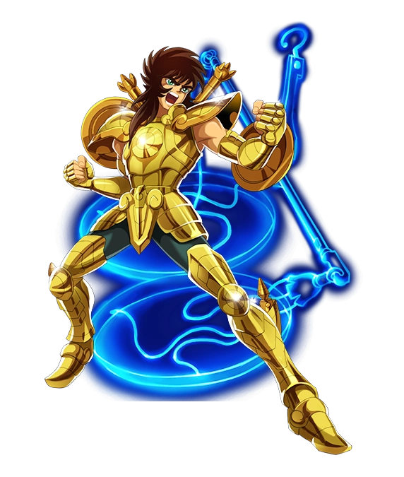
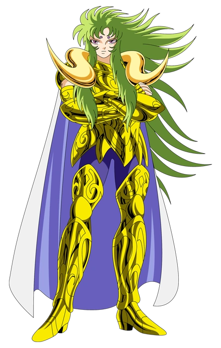

-
Shaka de Virgem
HP 9999
Descrição
Shaka de Virgem é o guardião da Casa de Virgem e é considerado o homem mais próximo de Deus, sendo o cavaleiro mais completo quando se fala das habilidades envolvendo o poder do Cosmos. Ele também transita pelo submundo dos mortos a qualquer momento e possui habilidades que vão além da compreensão humana, bem como poderes únicos como o Tesouro do Céu.
-
Saga de Gêmeos
HP 8000
Descrição
Saga de Gêmeos é o irmão mais velho de Kanon de Gêmeos e, ao contrário dele, possui uma personalidade um tanto conflituosa entre o bem e o mal. O personagem foi considerado, por muitas pessoas, o mais forte de toda a animação e possui grandes poderes como a Explosão Galáctica e as suas habilidades que mandam um adversário para outra dimensão.
-
Kanon de Gêmeos
HP 7000
Descrição
O irmão mais novo de Saga é um verdadeiro mistério na animação e possui uma personalidade um tanto sombria, mas também carrega um grande poder consigo. Entre as suas habilidades, a facilidade com que ele aprisiona os inimigos com o golpe Labirinto de Gêmeos é o grande destaque, além da sua força física excepcional.
-
Dohko de Libra
HP 6000
Descrição
O Dohko de Libra é um dos personagens mais renomados e respeitados, tanto pelos fãs da saga quanto pelos próprios cavaleiros dentro desse universo. Ele é o guardião da 7ª casa na animação japonesa e ficou muito conhecido pelo seu poderoso ataque Cólera dos 100 Dragões, que funciona basicamente como a Cólera do Dragão que ele ensinou ao discípulo Shiryu multiplicada por 100.
-
Shion de Áries
HP 5000
Descrição
Shion de Áries também é conhecido como Grande Mestre Shion e ficou bastante famoso por ser o mestre de Mu, que o sucedeu na Casa de Áries, além de ter habilidades incríveis, como a movimentação na velocidade da luz. O personagem também pode transitar pelo submundo da morte, uma vez que possui o 8º sentido apurado e a sua maior habilidade é a Revolução Estelar.